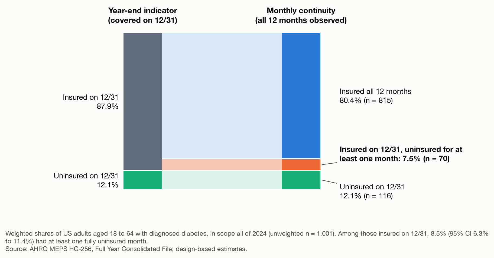
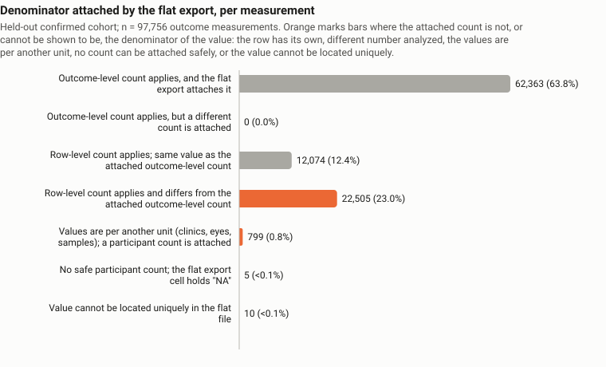
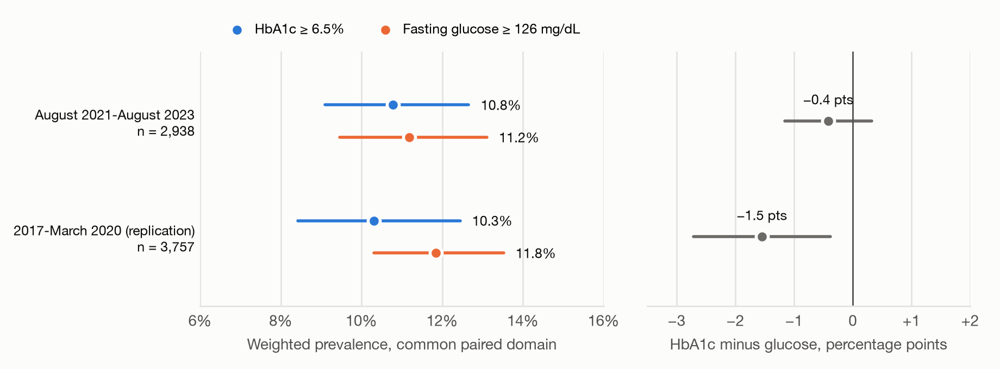
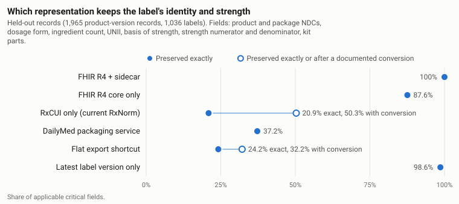
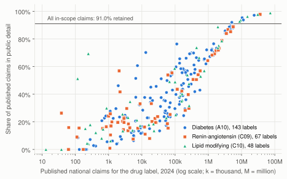
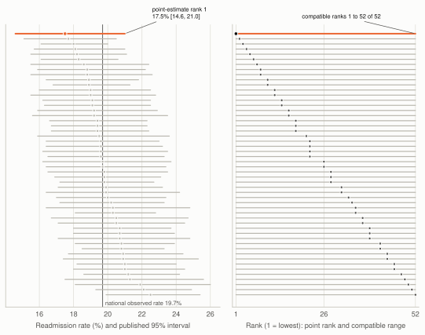
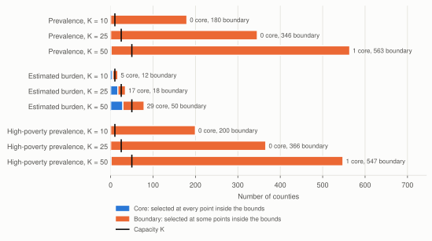
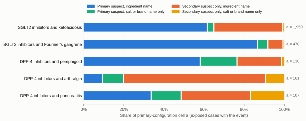
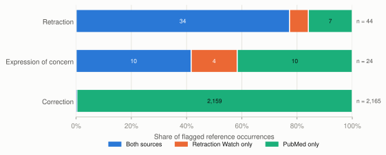

Research projects
I managed these ten health data studies at Norlowe Research. Each one includes the findings, methods, report and code.

Insurance continuity
A survey analysis of monthly insurance coverage, prescription use and spending in adults with diabetes. Year-end coverage misses gaps earlier in the year. Of US adults aged 18 to 64 with diagnosed diabetes who were insured on December 31, 2024, 8.5% had at least one fully uninsured month that year.

Trial results audit
An audit of 1,961 clinical trials that traces which participant count belongs with each reported result, and how much a one-count-per-arm export changes two-arm comparisons. For 23.0% of 97,756 measurements, that export attached a participant count other than the number analyzed that the table row itself reported.
Evidence model audit
Small local language models, and later three frontier models, answered 1,209 clinical trial questions. The benchmark tests whether a real quote means a correct answer. With retrieved passages, the main small model was still wrong in 45.6% of its answers backed by a real quote.

Diabetes definition audit
How the biomarker definition, laboratory sample and survey weight each move NHANES diabetes prevalence estimates, with a checker that refuses invalid comparisons. In 2,938 adults with both blood tests in 2021 to 2023, the two gave similar weighted prevalence, 10.8% and 11.2%, but flagged partly different people.

Medication identity
A pipeline from DailyMed labels to FHIR medication records, tested for information loss and terminology mismatches. Read from core FHIR R4 fields alone, 28.0% of 2,392 held-out active ingredients had their stated strength tied to the wrong substance.

Prescribing suppression
An audit of how suppressed records in Medicare Part D prescribing data affect drug totals and state comparisons. In 2024 the prescriber-drug file held 91.0% of published cardiometabolic drug claims, but the median drug label kept only 35.5% of its claims.

Hospital comparability
A check of CMS heart-failure hospital rankings that tests comparability and shows the uncertainty behind each ordering. The published uncertainty ranges overlapped for 99.6% of 141,219 same-state hospital pairs ranked on heart-failure readmission.

Diabetes outreach priorities
A county planning analysis comparing diabetes outreach priorities based on prevalence, estimated burden and poverty. Ranking counties by the share or by the estimated number of adults with diagnosed diabetes gave top 25 lists with no county in common.

Adverse event robustness
An analysis of how case definitions and processing choices change reported associations in FDA adverse-event reports. For one class of diabetes drugs and joint pain, also counting drugs named as secondary suspects moved the reporting odds ratio from 0.66 to 1.81.

Retraction-aware evidence
An audit linking references in 1,000 systematic reviews to retraction, correction and expression-of-concern records. In 40 of the reviews, 44 references cited work flagged as retracted, and for 14 references the retraction notice came before the review went online.
Animesh Bose